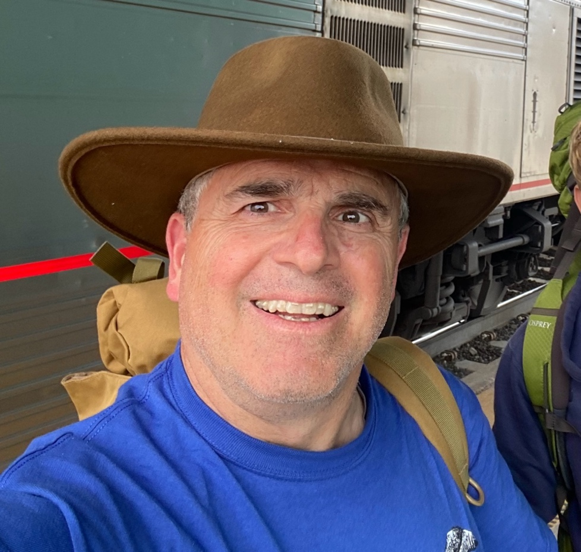

Religious Writings
- Heretics in the Pews – Disciples World 2003
- Sermon: Snakes, Wisdom & Televised Sports (2006)
- The Heretics are Restless: A Call for Theology Transformation, by Bill Cooley & Robert Aubrey
- Stewardship Message – Civil Society (October 2019)
Writings from Air Force Career:
- Cooley W T and Dougherty G M (2021); “Every Airman and Guardian a Technologist -- Reinvigorating a Disruptive Technology Culture,” Air & Space Power Journal, Volume 35 Issue 2, Summer 2021, 77.
- Cooley W T, Hahn D J, George J A (2020), “Adapting for Victory: DOD Laboratories for the 21st Century,” Joint Forces Quarterly (JFQ) 96, 1Q2020, 22-28.
- Cooley W T, Ruhm B C, Marsh A (2006), “Building an Army: Project Management in Afghanistan,” Defense AT&L 35 (4), 14.
- Suddarth S C, McNutt R T, Cooley W T, (2004) “Getting there FIRST,” Air & Space Power Journal 10 (1), 39.
- Cooley W T, Ruhm B C, (2015), “What Program Managers Need to Know: A New Book to Accelerate Acquisition Competence,” Defense AT&L: January-February 2015, 29-30.
- A Guide for DoD Program Managers: 80 Percent of What Department of Defense Program Managers Need to Know to Run and Effective and Efficient Program; by William T. Cooley and Brian C. Ruhm, published by Defense Acquisition University Press, Fort Belvoir, Virginia; December 2014
Technical Writings:
- Latham W P, Cooley W T, Vansuch G J, Salvi T C (1999), “High-Power Semiconductor Lasers: Applications and Progress,” Advanced High-Power Lasers and Applications (AHPLA), Osaka Japan, 1-5 Nov.
- Cooley W T, Hengehold R L, Yeo Y K, Turner G W, Loehr J P (1998), “Recombination dynamics in InAsSb quantum-well diode lasers measured using photoluminescence upconversion,” Applied Physics Letters 73 (20), 2890-2892.
- Kaspi R, Cooley W T, Evans K R, (1997), “In situ composition control of III-AS1-xSBx alloys during molecular beam epitaxy using line-of-sight mass spectrometry,” Journal of Crystal Growth 173, 5-13.
- Cooley W T and Razani A. (1991), "Thermal Analysis of Surface Mounted Leadless Chip Carriers," ASME Journal of Electronic Packaging, Vol. 113, 156-163.
- Latham W P, Cooley W T, Vansuch G J, Salvi T C (2000), “US DoD interests in in-plane semiconductor lasers,” In-Plane Semiconductor Lasers IV 3947, 2-11.
- Cooley W T, Gurney M L, Dodd P R, Griffy B W, Kelly J M, Pressnall T A, (1999), “Overview of the Air Force Research Laboratory laser applications group active imaging programs,” Infrared Technology and Applications XXV 3698, 202-209.
- Cooley W T, Marciniak M, Hengehold R L, Yeo Y K, Turner G T (1999), “Radiative Recombination Dynamics in InAsSb Quantum-Well Lasers,” American Physical Society (APS) Ohio Sections Fall Meeting.
- Cooley W T, Davis T, Kelly J (1998), “Battlefield Optical Surveillance System (BOSS)-A HMMWV Mounted System for Non-Lethal Point Defense,” Air Force Research Laboratory, Kirtland AFB, NM, published by Defense Technical Information Center (DTIC).
- Latham W P, Davis T M, Cooley W T, (1997) “Medical applications of high power semiconductor diode laser technology,” International Congress on Applications of Lasers & Electro-Optics (2), 27-34.
- Cooley W T, Hengehold R L, Yeo Y K, Loehr J P, Turner G W, (1996), “Non-radiative recombination in mid-infrared semiconductor materials measured using luminescence upconversion” APS March Meeting.
- Cooley, W T, Adams S F, Reinhardt K C, and Piszczor M F, (1992), “Photovoltaic Array Space Power Flight Experiment Plus Diagnostics (PASP+) Modules,” 27th International Energy Conversion Engineering Conference (IECEC) , paper no 929120, 3-7 Aug.
- Cooley, W T, (1991), “Air Force photovoltaic array alternatives,” Proceedings of the 26th Intersociety Energy Conversion Engineering Conference (IECEC), (2), 275-280.
- Sweet J N, Cooley W T, (1990), “Thermal resistance measurements and finite element calculations for ceramic hermetic packages,” Sixth Annual IEEE Proceedings Semiconductor Thermal and Temperature Measurement Symposium, CH2640-1, 10-16.
- Cooley W T, (2015) “Update on GPS Modernization Efforts,” Selected Acquisition Report (SAR), Air Force Space Command, Los Angeles AFB, CA, Space and Missile Systems Center
- Cooley W T (2013), Next Generation Operational Control System (GPS OCX),” Selected Acquisition Report (SAR), Air Force Space Command, Los Angeles AFB, CA, Space and Missile Systems Center.